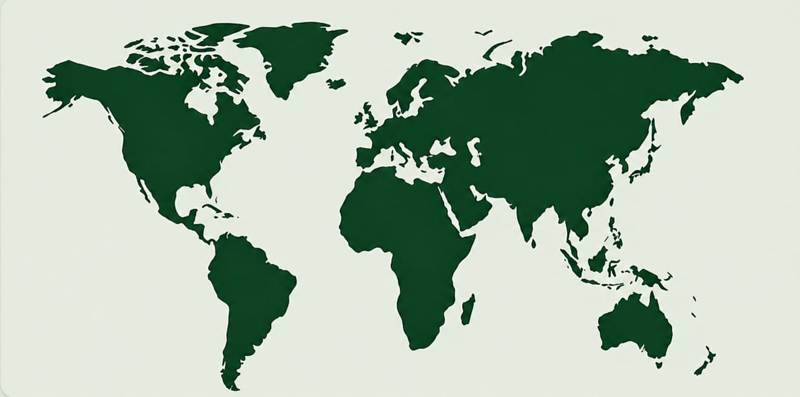

هِجْرَة الطّيُور هي حركةٌ موسميةٌ مُنتظمة، عادةً ما تكون باتجاه الشمال والجنوب على طول مسار الطائِر، وتكون بين مناطق التكاثر ومناطق التشتية (إمضاء الشتاء). تُهاجر أنواعٌ عديدة من الطيور، وذلك على الرغم من أنَّ هجرة الحيوانات عمومًا تنطوي على مخاطر عاليةٍ من الافتراس والوفاة، خصوصًا الناجمة عن الصيد البشري لها والذي يرتبطُ بالحاجة الأساسية لتوفير الطعام. تحدث هجرة الطيور غالبًا في نصف الأرض الشمالي، حيثُ تُجبر الطُيور على سلك مساراتٍ مُحددة بحواجز طبيعية مثل البحر الأبيض المتوسط أو البحر الكاريبي.
صوت الغراب
طائر القيثارة
ضحكة الكوكابورا